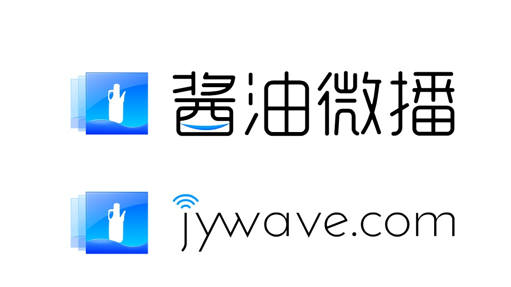

酱油微播：做播客纯属打酱油

按：「酱油微播」是由 GD、晓星、郑博主持的一档科技脱口秀节目，按照他们的说法做这个播客「纯属打酱油」。本文是 52Podcast 主编对「酱油微播」的主播 GD 进行的访谈。

以下为采访实录：
（S = 桑格，52Podcast 主编；G = GD，「酱油微播」主播。）
S: 你是如何萌生了做酱油的想法的？ 是受到了谁的影响吗？
G: 2011 年的时候，我在 VeryCD 上发现了一个叫做 GADIO 的游戏网络广播的下载，因为我本身是所谓核心 TV Game 玩家，发现这样的广播节目格外兴奋，原来广播除了点歌、路况、卖假药还有这样的节目，后来就顺藤摸瓜知道了糖蒜，也就在那会儿我有了一部 iPod touch，算是正式开始了解和接触 iTunes Store 和 Podcast。
我是计算机科班出身，也是典型的 80 后，平时都会关注互联网、科技方面一些新的东西，喜欢动手做一些实践。在听过糖蒜、三角龙等等前辈们的节目之后，发现声音有它独特的魅力，在这些节目里，我可以听到我的同龄人在不同行业的故事，有时很有共鸣。就这样，在 2011 年底，我和我的本科同学晓星（现任主播）讨论之后决定自己也做一个播客，因为我们的专业不是音乐或媒体方面的，做播客纯属打酱油，所以也就为我们的播客定名叫「酱油微播」。
酱油微播现在为止一共开了 4 档节目，酱油「冲击播 / 播动拳 / 逗好书 / 微科技」，冲击播是一档音乐分享类节目，由主播将平时听的音乐以主题的形式组织起来分享给听众；播动拳是一档脱口秀节目，它的名字来自于著名格斗游戏 Street Fighter 中隆和肯的招式；逗好书是一档读书分享类的节目，逗其实就是读，这是长沙普通话的读法（读书 = 逗虚）；微科技自然就是关注科技方面的话题节目。
S: 能说说你们的团队吗？你们是谁？你们有怎样的故事？
G: 我们的团队以我的本科同学为主，大部分还在学校，其中博士就有 4 位，工作的有 3 位，基本上都是在计算机、通信行业任职。在本科时，我有时会拿一个 MP3 搞点即兴的采访，几个同学在里面扮演专家、官员、评论员等角色就一些无厘头的话题进行讨论，这也可能是酱油微播节目的雏形。
以下是我们的主播形象，一共做过两版。
这一版是用 XBOX Live 的 Avatar 形象：

这一版是我手绘的 8bit 形象：

这是 Beatles：

这个嘛，嘿嘿：

S: 从你有了想法到真正开始做经历了多久的准备？主要是什么方面的准备？
G: 从真正决定到开始其实时间很短，大概一周的时间，那是 在2011 年 11 月，我拿iPad 随手画了一个酱油瓶做 Logo，玩了两下 Audition 就开始做节目了。
制作节目的部分其实问题并不多，主要的麻烦在发布上。2011 年国内还没有像荔枝FM、蜻蜓FM这样的音频发布平台，我找了好多的方案，最后确定了一个特别奇葩的方案：社交网络+网盘+Feed。节目信息的发布在社交网络上完成（人人、微博、豆瓣），网盘是一家叫 gokuai 的公司，只有它提供 http 形式的外链，feed 则托管在 taubau 的主页空间上，就这样，我给 iTunes 提交了申请，2011年11月7日，酱油微播第一期节目开播。
因为我们的主播大多不在一起，三位在西安，两位在国外，一位在北京，一位在上海，很难像别的播客那样大家面对面畅聊，我们要克服时差，克服网络带来的频繁掉线、音质差等等麻烦。每次录音，我们每个主播都会打开 iPhone 上的语音备忘录为自己留一份录音备份，录音结束后，将几份语音文件合成为一份，这样来保证节目的音质。
S: 你在做播客的时候，你觉得你节目的核心是什么？你觉得酱油是一个怎样的播客？你花在什么上的精力最多？
G: 酱油微播节目给人感觉应该是，几个好朋友许久未见，见面以后会互相问最近有什么好玩的东西、新鲜的观点，而这种感觉应该就是我们节目的核心：分享，酱油微播很有包容性，是充分表达个人观点和思考的平台。平时在找主题、收集相关内容上面比较花精力，如果只是平时聊天，一般的话题聊聊也就过了，但如果要作为主题深入讨论，则必须收集足够多的资料来充实节目，这样听起来才不会空洞，节目才能有营养。
S: 你们是如何确定每一期的主题？做节目前你们会做些什么准备？
G: 节目的主题一般是根据最近发生的、大家比较关注的事件来选择，比如微博上的热门话题等等，在节目录制之前，我会到维基、知乎还有一些bbs上搜索相关的资料，充实节目的内容，还可以为主播引出更多观点。
S: 你有关注别的播客么？有推荐吗？
G: 糖蒜、GADIO、坏蛋调频、闲白儿电台，都是比较娱乐的，也能涨姿势，听播客毕竟不是上课，还是轻松些好。
S: 做播客在你的生活中占了多少比重？
G: 对于我来说，做播客现在已经有成熟的流程，所以占用的时间不会太多，做一期节目大概准备一天就可以录音了，但是寻找一个主题，准备内容则需要花费比较多的时间，我通常会在自己的备忘录里记录一些关键字，在收集到足够的内容之后再进行录音制作。
S: 做播客给你带来了什么？
G: 做播客挖掘了我自己很多的可能性，在酱油微播一周年的时候我设计制作了一套马克杯，登登登等：

最近又完成了酱油微播的Android客户端，登登登等：

以前自己觉得工作量很大很难完成的事情，认真弄一下也就完成了。当然，做播客还让我认识了很多新的朋友，他们在各个方面都给我很多启发。
S: 到现在做播客产生了收益么？你对运营成本的收回有什么想法？
G: 目前还没有产生收益，都是我们几位主播凑钱在支持，目前的运营成本并不高，所以我们也是当做爱好在坚持。
S: 做播客需要很多精力，也需要经济实力。很多主播有时会非常疲惫，甚至想要放弃，那你觉得你会一直坚持么？为什么？什么是你的动力？
G: 做播客需要有大段的时间去整理资料，自己也需要去提高，因为一个人的故事实在有限，讲一讲就没了。在工作后，时间方面可能就不会像在校园里这么充裕，但我还是会坚持，很多朋友和听众的支持都是我坚持的动力。
S: 你最近喜欢的一本书 / 一部电影？
G: 我推荐《触不可及（Intouchables）》，一部讲故事的电影，很温暖，我不看书，所以问了主播晓星，他推荐《白鹿原》。
S: 对那些想要做播客的人，你有什么建议吗？
G: 准确的定位，充实的内容，还有坚持。
最后在这里感谢所有收听支持「酱油微播」的朋友们，感谢大家的陪伴。
相关链接：
- 酱油微播微博：@酱油微播
- 酱油微主播页：http://www.jywave.com
- Podcast 订阅地址